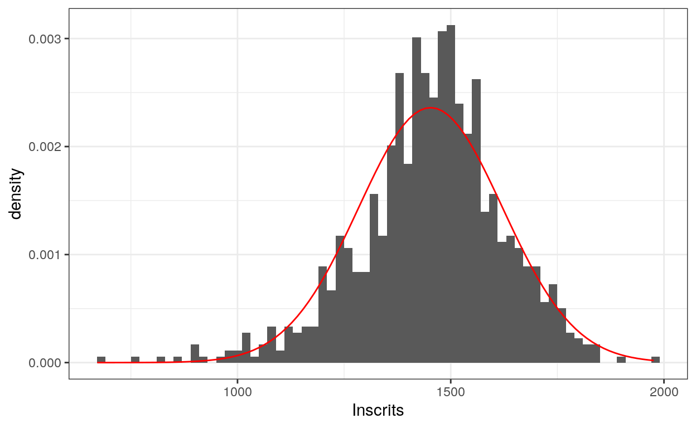
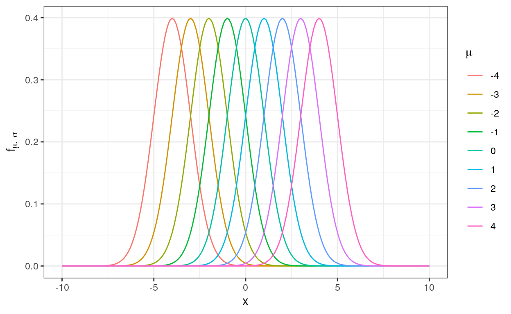
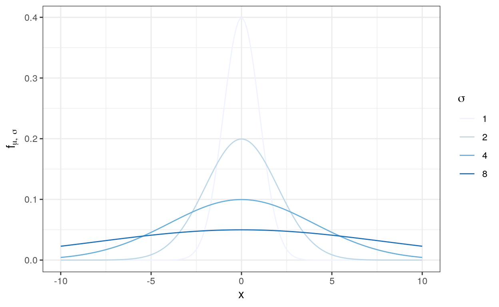

The goal of this class is to acquaint yourself with two very classical distributions:
We’ll give standard results on those distributions, illustrate how to compute various quantities (density function, quantiles and cumulative distribution function) using R and illustrate how to generate draws from those distributions.
Normal (or Gaussian) distributions are very important in statistics as they are often used to represent natural phenomena. Its huge importance is partly due to the central limit theorem that states, under some conditions, the average of many observations behaves as a random variable with gaussian distributions.
It can also serve as a reasonable approximation for the distribution of many real-life quantities. Consider the following histogram, representing the number of registered voters in each of the 896 voting booth (also known as booth size) of Paris (stored in the data set pres2017). The distribution of booth sizes has a mode around 1450 most booth are not too far away from this value. This distribution is reasonably approximated by a Gaussian distribution \(\mathcal{N}(\mu, \sigma)\) with parameters \(\mu = 1452\) and \(\sigma = 169\) (in red in the graph). Intuitively, \(\mu\) is the typical voting booth size whereas \(\sigma\) is the typical spread of booth sizes around that size.

For the same reasons, the gaussian distribution is also widely used to model measurement errors in physics.
A real-valued continuous random variable \(X\) is said to have a normal distribution \(\mathcal{N}(\mu, \sigma^2)\), written \(X \sim \mathcal{N}(\mu, \sigma^2)\), of mean \(\mu\) and standard deviation \(\sigma\) if its probability density function is:
\[ f_{\mu, \sigma}(x) = \frac{1}{\sigma\sqrt{2\pi}}e^{-\frac{(x - \mu)^2}{2\sigma^2}} \] In other words, the probability that \(X\) takes values in an infinitesimal interval of size \(dx\) around \(x\) is \[ \mathbb{P}\left( X \in \left[x - \frac{dx}{2}, x + \frac{dx}{2} \right] \right) = f_{\mu, \sigma}(x)dx \] When moving to non infinitesimal intervals of the form \([a, b]\), we can simply integrate the previous equality over \(x\) to obtain
\[
\mathbb{P}(X \in [a, b]) = \int_{x = a}^{x = b} f_{\mu, \sigma}(x)dx
\] The density function \(f_{\mu, \sigma}\) of \(\mathcal{N}(\mu, \sigma)\) can be computed with the function dnorm() (d stands for density and norm for normal distribution). The special case \(\mu = 0\) and \(\sigma = 1\) is very important and corresponds to the so called standard normal distribution.
In particular, since \(f_{0, 1}\) is a density function, it must sum up to \(1\) (as \(\mathbb{P}(X \in \mathbb{R}) = 1\)). We thus have \[
\int_{-\infty}^{+\infty} \frac{1}{\sqrt{2\pi}}e^{-x^2/2}dx = 1
\] Use dnorm() to compute \(f_{\mu, \sigma}(x)\) for various values of \(\mu\) (argument mean), \(\sigma\) (argument sd) and \(x\).
dnorm(x = 0, mean = 0, sd = 1)The function plot_normal_density() allows you to plot \(f_{\mu, \sigma}\) over \([-10, 10]\) for various values of \(\mu\) and \(\sigma\). Use it to get a feeling of the normal distribution. Try to find simple relationships between the different functions \(f_{\mu, \sigma}\).
plot_normal_density(mu = 0, sigma = 1)Let’s explore the relationships between the different density curves.
Regarding \(\mu\), the previous exercice suggests that when changing \(\mu\) and keeping \(\sigma\) unmodified, we simply translate the curves:

You can check numerically that \(f_{\mu, \sigma}(x) = f_{\mu + h, \sigma}(x + h)\) for all \(x\), \(h\), \(\mu\) and \(\sigma\)x <- 1
h <- 1
mu <- 0
sigma <- 1
dnorm(x = x+h, mean = mu + h, sd = sigma) - dnorm(x = x, mean = mu, sd = sigma)We can also check it formally. Note \(y = x+h\) \[ \begin{multline*} f_{\mu+h, \sigma}(y) dy = f_{\mu+h, \sigma}(x+h) d(x+h) \\ = \frac{1}{\sigma\sqrt{2\pi}}e^{-\frac{(x+h - (\mu+h))^2}{2\sigma^2}} dx = \frac{1}{\sigma\sqrt{2\pi}}e^{-\frac{(x - \mu)^2}{2\sigma^2}} dx = f_{\mu, \sigma}(x)dx \end{multline*} \]
To make the connection explcit in terms of random variables, \[ X \sim \mathcal{N}(\mu, \sigma^2) \Rightarrow Y = X + h \sim \mathcal{N}(\mu + h, \sigma^2) \] In particular, \[ \forall a \leq b \in \mathbb{R}, \quad \mathbb{P}(Y \in [a+h, b+h]) = \mathbb{P}(X \in [a, b]) \]
Regarding \(\sigma\), the relation between curves is slightly more complex: the curves become increasingly flat and stretched out when the standard deviation \(\sigma\) increases.

You can check numerically that \(f_{\mu, \sigma}(x) = a f_{a\mu, a\sigma}(ax)\) for all \(x\), \(a\) and \(\sigma\)x <- 1
a <- 2
mu <- 0
sigma <- 1
dnorm(x = x, mean = mu, sd = sigma) - a*dnorm(x = a*x, mean = a * mu, sd = a*sigma)In terms of density, noting \(y = ax\), this means that \(f_{\mu, a\sigma}(y)dy = f_{\mu, \sigma}(x)dx\) \[ f_{\mu, a\sigma}(y)dy = f_{\mu, a\sigma}(ax)d(ax) = \frac{1}{a\sigma\sqrt{2\pi}}e^{-\frac{(ax - a \mu)^2}{2\sigma^2}} adx= \frac{1}{\sigma\sqrt{2\pi}}e^{-\frac{(x - \mu)^2}{2\sigma^2}} dx = f_{\mu, \sigma}(x)dx \] To make the connection explcit in terms of random variables, \[ X \sim \mathcal{N}(\mu, \sigma^2) \Rightarrow Y = aX \sim \mathcal{N}(a\mu, a^2\sigma^2) \] In particular, \[ \forall x_1 \leq x_2 \in \mathbb{R}, \quad \mathbb{P}(Y \in [x_1, x_2]) = \mathbb{P}\left(X \in \left[\frac{x_1}{a}, \frac{x_2}{a}\right]\right) \]
Combining the two previous observations: \[ X \sim \mathcal{N}(\mu, \sigma^2) \Rightarrow Y = aX + h \sim \mathcal{N}(a\mu + h, a^2\sigma^2) \]
In particular, for all parameters \(\mu\) and \(\sigma^2\), we can decompose any gaussian variable \(X \sim \mathcal{N}(\mu, \sigma^2)\) as \(X = \mu + \sigma Z\) where \(Z \sim \mathcal{N}(0, 1)\) is a standard gaussian variable.
In practice, it means that we can compute all the quantities we need on a standard gaussian and then use simple transforms to transfer them to any gaussian distribution. For example, if \(X \sim \mathcal{N}(\mu, \sigma^2)\), then
\[ \begin{align*} \mathbb{P}(X \in [a, b]) & = \mathbb{P}(\mu + \sigma Z \in [a, b]) \\ & = \mathbb{P}\left(\sigma Z \in \left[a-\mu, b - \mu \right]\right) \\ & = \mathbb{P}\left(Z \in \left[\frac{a-\mu}{\sigma}, \frac{b - \mu}{\sigma} \right]\right) \end{align*} \]
Let’s now compute the expectation and standard devation of a gaussian random variable. With the previous remark, we first compute them for \(X \sim \mathcal{N}(0, 1)\) and will then extend it to more general variables \(X \sim \mathcal{N}(\mu, \sigma)\).
Remember that the formula for discrete distribution is
\[ \mathbb{E}(X) = \sum_{x \in \Omega} x \mathbb{P}(X = x) \] Here, \(X\) is real-valued and continuous. We thus need to change the sum to an integral to obtain the formula:
\[ \mathbb{E}(X) = \int_{\mathbb{R}} x \underbrace{f_{0, 1}(x)dx}_{\simeq \mathbb{P}(X \in [x, x + dx])} \]
Before computing this quantity exactly, let’s try to guess its values by simulation. The function rnorm() (r stands for random draw and norm for normal distribution) allows you to sample many values from any gaussian distribution. By default, it draws values from a standard gaussian.
Fill in the dots to compute the average value of 100, 1000 and 10000 values sampled from \(\mathcal{N}(0, 1)\)
mean(rnorm(...))"Look at the help of the function, understand what each parameter stands for."mean(rnorm(n = 100)) ## Mean of 100 values
mean(rnorm(n = 1000)) ## Mean of 1000 values
mean(rnorm(n = 10000)) ## Mean of 10000 valuesRepeat the exercise for different values of \(\mu\) and \(\sigma\) before answering the following questions:
We’ll compute the expectation of \(X \sim \mathcal{N}(0, 1)\) exactly: \[ \begin{align*} \mathbb{E}[X] & = \int_{\mathbb{R}} x f_{0, 1}(x)dx = \int_{\mathbb{R}} \frac{x}{\sqrt{2\pi}} e^{-x^2/2} dx \\ & = \frac{1}{\sqrt{2\pi}} \lim_{A \to +\infty} \int_{-A}^A \underbrace{xe^{-x^2/2}dx}_{= d(-e^{-x^2/2})} \\ & = \frac{1}{\sqrt{2\pi}} \lim_{A \to +\infty} \underbrace{\left[ -e^{-x^2/2} \right]_{-A}^A}_{= 0} = 0 \end{align*} \] For a non standard gaussian variable \(Z \sim \mathcal{N}(\mu, \sigma^2)\), we use the relation \(Z = \mu + \sigma X\) with \(X \sim \mathcal{N}(0, 1)\) to write: \[ \begin{align*} \mathbb{E}[Z] & = \mathbb{E}[\mu + \sigma X] = \mu + \sigma \mathbb{E}[X] = \mu \end{align*} \] The second equality stems from the linearity of the expectation, which is itself a byproduct of the linearity of the sum and the integral.
We can once again use simulations to guess the variance of \(X \sim \mathcal{N}(0, 1)\). Adapt the previous code chunck to guess the variance of \(X\) using 100, 1000 and 10000 values sampled from \(\mathcal{N}(0, 1)\).
"What function should you use to compute the variance?""Remember `var()` from lesson 2.1?"var(rnorm(n = 100)) ## Variance of 100 values
var(rnorm(n = 1000)) ## Variance of 1000 values
var(rnorm(n = 10000)) ## Variance of 10000 valuesRepeat the previous exercise for different values of \(\mu\) and \(\sigma\) before answering the following questions:
We’ll compute the variance of \(X \sim \mathcal{N}(0, 1)\) exactly using integration by parts: \[ \begin{align*} \mathbb{V}[X] & = \mathbb{E}[(X - \underbrace{\mathbb{E}[X]}_{= 0})^2] = \mathbb{E}[X^2] \\ & = \int_{\mathbb{R}} x^2 f_{0, 1}(x)dx = \int_{\mathbb{R}} \frac{x^2}{\sqrt{2\pi}} e^{-x^2/2} dx \\ & = \frac{1}{\sqrt{2\pi}} \lim_{A \to +\infty} \int_{-A}^A \underbrace{x}_{= u(x)} \times \underbrace{xe^{-x^2/2}}_{=v'(x)} dx \\ & = \frac{1}{\sqrt{2\pi}} \lim_{A \to +\infty} \left[ u(x) v(x)\right]_{-A}^A - \int_{-A}^A u'(x)v(x)dx \\ & = \frac{1}{\sqrt{2\pi}} \lim_{A \to +\infty} \underbrace{\left[ -xe^{-x^2/2} \right]_{-A}^A}_{\xrightarrow[A \to \infty]{} 0} + \int_{-A}^A e^{-x^2/2} dx \\ & = \frac{1}{\sqrt{2\pi}} \int_{-\infty}^{+\infty} e^{-x^2/2} dx = 1 \end{align*} \] For a non standard gaussian variable \(Z \sim \mathcal{N}(\mu, \sigma^2)\), we use the relation \(Z = \mu + \sigma X\) with \(X \sim \mathcal{N}(0, 1)\) to write: \[ \begin{align*} \mathbb{V}[Z] & = \mathbb{E}\left[\left( (\mu + \sigma X) - \underbrace{\mathbb{E}[\mu + \sigma X]}_{= \mu} \right)^2 \right] = \mathbb{E}[\sigma^2 X^2] = \sigma^2 \end{align*} \]
To summarize the results, a random variable \(X \sim \mathcal{N}(\mu, \sigma^2)\) has mean \(\mu\) and variance \(\sigma^2\) (or equivalently standard deviation \(\sigma\)).
On top of the density function, it is useful for many applications to compute various quantiles and evaluate the cumulative distribution function (also called probability). You can do so with the functions pnorm() for the distribution and qnorm() for the quantiles.
Remember that the quantile \(q_\alpha\) of order \(\alpha\) (for \(\alpha \in [0, 1]\)) of the random variable \(X \sim \mathcal{N}(\mu, \sigma^2)\) is implicitly defined by the equation \[ \mathbb{P}(X \leq q_\alpha) = \alpha \] and that the distribution function \(F_X = F_{\mu, \sigma}\) is defined by \[ F_{\mu, \sigma}(x) = \mathbb{P}(X \leq x) = \int_{-\infty}^{x} f_{\mu, \sigma}(u)du \]
Consider \(X \sim \mathcal{N}(0, 1)\). Use pnorm() to compute \(\mathbb{P}(X \in [-1, 1])\)
"Write the target quantity as a difference""Compute P(X <= 1) - P(X <= -1)pnorm(1) - pnorm(-1)Now use qnorm() to find a relationship between \(q_{\alpha}\) and \(q_{1 - \alpha}\)
We want to find \(x\) such that \(\mathbb{P}(X \in [-x, x]) = 0.6\). Using the symmetry of \(X\), we can write \[ \begin{align*} \mathbb{P}(X \in [-x, x]) & = \mathbb{P}(X \leq x) - \mathbb{P}(X \leq -x) \\ & = (1 - \underbrace{\mathbb{P}(X \geq x)}_{\mathbb{P}(X \leq -x)}) - \mathbb{P}(X \leq -x) \\ & = 1 - 2\mathbb{P}(X \leq -x) \end{align*} \]
Useqnorm() to compute \(x\)
qnorm(...)The last point we’ll cover concerns sums of random variables. Consider two independent random variables \(X_1 \sim \mathcal{N}(0, 1)\) and \(X_2 \sim \mathcal{N}(0, 1)\). What can we say about \(Z = X_1 + X_2\)?
We’ll try to guess the answer using simulations. Generate 1 000 values for \(X\), 10 000 values of \(Y\) and build the density of \(Z = X+Y\).
df <- tibble(
x1 = ...,
x2 = ...,
z = x1 + x2)
ggplot(df, aes(x = z, y = ..density..)) +
geom_histogram(binwidth = 0.05)df <- tibble(
x1 = rnorm(10000),
x2 = rnorm(10000),
z = x1 + x2)
ggplot(df, aes(x = z, y = ..density..)) +
geom_histogram(binwidth = 0.05)It looks a lot like the density of a gaussian random variable. It turns out that’s the case: \(Z\) is itself a gaussian random variable with mean \(\mu\) and \(\sigma^2\).
But what can we say about \(\mu\) and \(\sigma^2\)?
The previous result can be extented to an arbitrary number of independent gaussian variables: if the \(X_i\) (for \(i \in \{1, \dots, n\}\)) are independent gaussian variables with \(X_i \sim \mathcal{N}(\mu_i, \sigma_i^2)\), then:
\[ Z = X_1 + \dots + X_n \sim \mathcal{N}(\underbrace{\mu_1 + \dots + \mu_n}_{=\mathbb{E}[Z]}, \underbrace{\sigma_1^2 + \dots + \sigma_n^2}_{=\mathbb{V}[Z]}) \]
The chi square distribution comes up very often in statistical analysis and is very useful in hypothesis testing and in construction of confidence interval. It’s derived from the standard normal variable.
If \(X_1, \dots, X_n\) are \(n\) independent standard normal random variables, then the sum of their squares:
\[ U = \sum_{i=1}^n X_i^2 \] is a positive, continuous, random variable distributed according to the chi-square distribution with \(n\) degrees of freedom, noted \(\chi_n^2\)
The density function of the \(\chi_n^2\) distribution is quite complex: \[ f_n(x) = \frac{x^{\frac{n-1}{2}}e^{-\frac{x}{2}}}{2^{\frac{n}{2}} \Gamma\left(\frac{n}{2}\right)} \] where \(\Gamma\left(\frac{n}{2}\right)\) is a constant computed such that \[ \int_0^{+\infty} f_n(x)dx = 1 \] to ensure that \(f_n\) is a proper density function.
You can evaluate this function at any with dchisq(), where df stands for degrees of freedom.
dchisq(x = 1, df = 1)plot_chisq_density() allows you to plot the density of \(\chi_n^2\) for various values of \(n\):
plot_chisq_density(df = 3)Unlike the normal distribution, the \(\chi^2\) density is asymmetric and depends on only one parameter. There is no simple relationship between the densities of \(\chi^2_n\) and \(\chi^2_p\).
Just like for the normal distribution, you can compute the quantiles and the distribution function of the \(\chi^2\) with the function qchisq() and pchisq() and generate \(chi^2\) distributed values with rchisq().
Practice those functions and answer the set of questions
Assume that \(X \sim \chi_3^2\) and \(Y \sim \chi_5^2\)
Before doing the exact computation, use simulations to guess the mean and variance of \(U \sim \chi_n^2\)
u <- rchisq(..., df = 3)
...
...u <- rchisq(n = 10000, df = 3) ## any large value of n will do
mean(u)
var(u)Repeat the process for different values of df and take a guess.
The mean and variance of \(U \sim \chi_n^2\) can be computed simply from the decomposition \[ U = \sum_{i=1}^n X_i^2 \] Remember that the expectation is linear.
\[ \mathbb{E}[U] = \mathbb{E}\left[ \sum_{i=1}^n X_i^2 \right] = \sum_{i=1}^n \mathbb{E}[X_i^2] = \sum_{i=1}^n \underbrace{\mathbb{V}[X_i]}_{=1} = n \]
The variance is also additive for independent variables, thus \[ \mathbb{V}[U] = \mathbb{V}\left[ \sum_{i=1}^n X_i^2 \right] = \sum_{i=1}^n \mathbb{V}[X_i^2] = \sum_{i=1}^n \mathbb{E}[X_i^4] - {\underbrace{\mathbb{E}[X_i^2]}_{=1}}^2 \]
We thus need to compute \(\mathbb{E}[X^4]\) when \(X\) is a standard normal random variable. We can do so using several consecutive integration by parts:
\[ \begin{align*} \mathbb{E}[X^4] & = \frac{1}{\sqrt{2\pi}}\int_{-\infty}^{+\infty} x^4e^{-x^2/2}dx \\ & = \frac{1}{\sqrt{2\pi}}\int_{-\infty}^{+\infty} \underbrace{x^3}_{=u(x)} \times \underbrace{xe^{-x^2/2}}_{v'(x)}dx \\ & = \frac{1}{\sqrt{2\pi}} \left\{ \underbrace{[-x^3 e^{-x^2/2}]_{-\infty}^{+\infty}}_{= 0} + \int_{-\infty}^{+\infty} 3x^2 e^{-x^2/2}dx \right\}\\ & = 3 \int_{-\infty}^{+\infty} \frac{x^2}{\sqrt{2\pi}} e^{-x^2/2}dx = 3\mathbb{E}[X^2] = 3 \end{align*} \] Plugging this result in the previous expression yields \(\mathbb{V}[U] = 2n\).